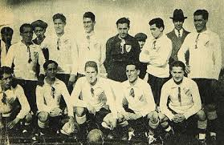
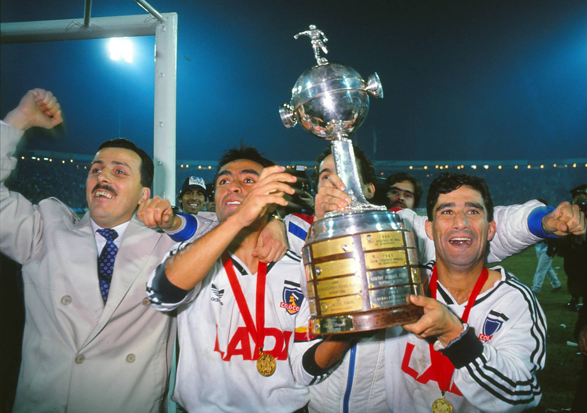
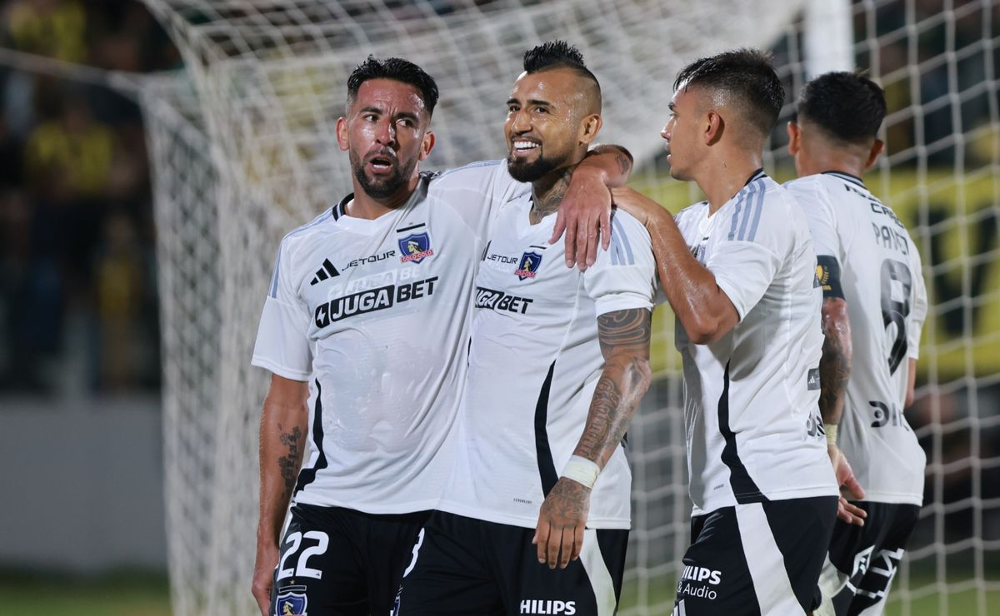

Club Social y Deportivo Colo-Colo fue fundado el 19 de abril de 1925 en Santiago de Chile por David Arellano y otros apasionados del fútbol. El nombre rinde homenaje al líder mapuche Colo Colo, símbolo de resistencia y valentía. Desde sus inicios, el club se caracterizó por su estilo ofensivo y su conexión con la identidad chilena.
En las décadas de oro, Colo Colo conquistó múltiples títulos de la Primera División chilena y se convirtió en el primer equipo chileno en ganar la Copa Libertadores en 1991, derrotando al Olimpia paraguayo en la final. Figuras legendarias como Caszely y Rozental marcaron esta era de gloria.
En el siglo XXI, Colo Colo ha mantenido su dominio en el fútbol chileno con más de 30 títulos nacionales. Su rivalidad con Universidad de Chile y Universidad Católica define el "Clásico Universitario". Hoy, el club sigue inspirando a generaciones con su espíritu guerrero.
